TEPA：通过撤销陈旧记忆构建抗冲突语言智能体
论文 TEPA: Revoking Stale Memories for Conflict-Robust Language Agents 由 Yan Zhou、Yue Ouyang、Kaiyang Zheng 与 Suncheng Xiang 完成，一作主机构是长沙理工大学数学与统计学院，合作机构为上海交通大学生物医学工程学院。论文于 2026 年 8 月 7 日提交，入口为 arXiv:2608.07429。截至本轮核验，未在可验证来源中找到独立代码或项目页，因此本文只依据论文原文讨论机制与实验，不把可复现性写成已确认事实。
长期记忆让语言智能体能够复用事实、偏好与任务经验，但当世界发生变化时，已经失效的记忆仍会以高相关证据进入提示，与新事实共同影响决策；真正缺失的不是更强检索，而是让智能体能够撤销、审计并在必要时重新激活记忆的显式有效性机制。
1. 背景和问题
长期记忆系统通常优化三个问题：写入什么、如何压缩、怎样把最相关的内容取回来。Reflexion 把失败后的经验写成语言反馈，MemoryBank 累积对话记忆，Generative Agents 用相关性、重要性和时间新鲜度排序，ExpeL 则把轨迹提炼成可复用规则。它们共同证明了持久记忆有价值，却也留下一个不对称：系统很善于增长记忆，对“过去正确、现在已经错误”的项目如何退出普通检索缺少同等明确的操作。一条旧偏好或旧工具经验即使已经失效，仍可能因为与当前查询高度相似而排在检索前列；更大的 top-k 或更长上下文甚至会让新旧证据同时出现，把冲突交给语言模型临场消解新旧矛盾。
TEPA 将这种失败称为 memory pollution：新证据已经取代旧证据，但旧项仍处于活动状态并被塞进 prompt，由此造成性能下降。这个定义与一般的概念漂移相关，却强调了语言智能体特有的操作路径。传统漂移适配常更新分类器、参数或数据分布；这里的有害对象是一段可读、可检索、看上去仍然“相关”的文本证据。只要它还在活动集合中，排序器就没有可靠信号判断它已被反证。因此论文关注 stale-conflict consolidation：两个观察指向同一个语义槽位或工具状态，却断言不同的当前值，系统应该依据更新证据回答，同时保留旧事实的来历与撤销轨迹。
这个问题不能简单等同于“取最新一条”。在 MemoryAgentBench 的干净单跳事实流里，新事实被直接提供，last-write-wins 确实是很强的基线；但在隐藏工具状态或偏好更新流中，智能体只看到交互结果，不知道真正的 phase boundary，也不能把一次失败立即解释成世界已经反转。全局清空会误删其他 key 下仍然有效的经验，滑动窗口会按年龄而不是冲突关系丢内容，semantic retrieval 又会继续偏爱语义上最贴题的旧事实。论文由此把设计单位从“整段历史”缩小为带 conflict key 的 precedent，并要求每个 precedent 都有可检查的生命周期状态。
作者先提出一个很有判别力的最低标准：如果某种记忆机制在反转阶段的成功率低于 no-memory，记忆就不只是没帮上忙，而是成为了主动伤害源。围绕这个标准，论文提出四个研究问题：隐藏状态完整反转时 append-only 是否真的会差于不用记忆；局部撤销能否在受控任务和真实文件执行中避免该失败；可执行 trial 能否让偏好更新更稳；同一机制迁移到外部记忆 benchmark 时，收益会停在哪些边界。这个问题设置的优点是把“记忆系统更聪明”的宽泛主张拆成了可验证的生命周期操作。
对推荐与个性化系统而言，这个问题也很具体。用户长期偏好、实体属性、规则配置、工具路由和内容安全状态都可能随时间反转。仅靠相似度召回容易把已经过期但语义高度匹配的画像继续送入排序或 Agent prompt。TEPA 的价值不在于发明新的 dense retriever，而在于在检索之前先回答“这条证据还有效吗”。它把撤销和归档做成显式状态转换，使推荐链路能够区分审计留存与在线可见性，也让错误撤销有机会回滚，而不是只能物理删除。更重要的是，这种状态划分让离线评测能够单独统计误撤销、撤销延迟和旧证据暴露率，不再只能从最终回答准确率反推是哪一层出了问题；这也是论文与一般检索优化最不同的系统视角，并为线上审计、回滚和责任追踪建立了可落地的事件口径。
2. 方法
2.1 问题形式化：episode stream、冲突键与污染指数
论文把交互写成 episode 流，每一步既包含决策前可见信息，也包含行动后的证据和评测器侧隐藏状态：
符号解释：$c_t$ 是智能体可见的任务或查询上下文，$x_t$ 是行动后得到、可用于更新记忆的事实或工具结果，$z_t$ 是控制当前正确值的隐藏 regime。方法 $m$ 依据 $c_t$ 与活动记忆的检索结果产生行动，随后看到二元成功信号与 $x_t$。关键约束是 $z_t$ 和未来相位边界不会提供给方法，所以撤销必须从证据流中推断，而不能偷看真实切换点。
证据通过两个提取器转成冲突键和值。同 key 但值不同，才被视为能够互相反证：
符号解释：$\kappa(\cdot)$ 抽取“这条证据在谈什么”，例如偏好槽位、实体关系或工具状态；$\nu(\cdot)$ 抽取“它断言的当前值”；$\mathbb{I}[\cdot]$ 是指示函数。这个定义让撤销保持局部：法国首都的更新不会清空其他实体，CSV 工具后端的变化也不会误伤稳定的 JSON 任务。TEPA 的核心不是给检索分数加惩罚，而是先建立可被反证的 key-value 单元，再改变哪些单元有资格进入检索。
每个阶段 $\phi$ 的成功率和相对 no-memory 的污染指数分别定义为：
符号解释：$T_\phi$ 是属于阶段 $\phi$ 的 episode 集合，$y_t^{(m)}\in\{0,1\}$ 表示方法 $m$ 在第 $t$ 步是否成功。它不是跨阶段平均，而是专门把 stable、light drift、full reversal 和 partial return 分开，避免总体分数掩盖反转时的伤害。
符号解释：分子是 no-memory 与方法 $m$ 的成功率差，分母用于按该阶段基础难度归一化；$\operatorname{MPI}>0$ 表示记忆方法比完全不暴露历史证据更差。这个指标把“记忆污染”变成可检验命题，而不是看到曲线下降后再做主观解释。
2.2 带显式有效性状态的 Precedent
TEPA 把每条记忆表示为带状态的 precedent：
符号解释：$k$ 和 $v$ 是冲突键与断言值，$s$、$f$ 分别累计支持和冲突次数，$\sigma\in\{\mathrm{Hypothesis},\mathrm{Active},\mathrm{Revoked}\}$ 是生命周期状态，$\tau$ 是创建时间。Hypothesis 允许候选先积累证据；Active 才能被普通检索；Revoked 留在归档中供审计和未来重新激活，但不会继续污染当前 prompt。
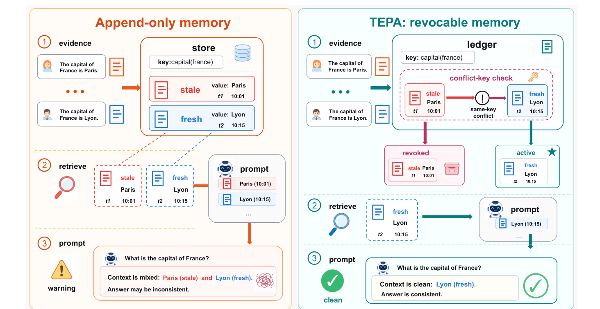
Figure 1 左侧揭示了 append-only 的根本问题：Paris 与更新后的 Lyon 共享同一 key，却都保持活动，检索器把两者一起送入 prompt，模型面对的是“旧值仍然像证据”的混合上下文。右侧 TEPA 先做 conflict-key check，将 Paris 从活动集合移入 revoked archive，只让 Lyon 进入检索。注意它没有物理删除 Paris：旧项仍有时间、来源与状态记录，因而可解释为何失效，也能在环境再次返回时被重新评估。图里最重要的分界不是 old/new，而是 revoked/active；时间新鲜度只能近似前者，生命周期状态直接决定在线可见性。对个性化系统，这相当于把“历史画像保留多久”和“当前排序能否使用它”拆成两套控制面。
precedent 的当前可信度使用透明的 Beta-Bernoulli 后验均值：
符号解释：$s_p$ 与 $f_p$ 是该 precedent 的支持和冲突计数，$\alpha=\beta=1$ 是实验固定的先验计数。$q(p)$ 不是大模型自评置信度，而是可重放的事件统计。它把连续证据压成状态机可以使用的数值，同时保留每次支持或反证的来源，便于定位撤销是否由噪声触发。
2.3 Lifecycle Update：撤销、归档与重新激活
Algorithm 1 的更新顺序很关键。系统先只从 $A_{t-1}$ 检索并执行任务，得到结果后再抽取 $(k_t,v_t)$；随后遍历同 key 的活动 precedent。若值一致就增加支持计数，若值冲突就增加 $f$。总观察数至少达到 $n_{\min}=5$ 且 $q(p)<\theta_{\mathrm{rev}}=0.3$，或者最近同 key 结果至少有 $n_{\mathrm{rec}}=3$ 且 recent success 低于 $\theta_{\mathrm{rec}}=0.34$ 时，旧项移入 revoked archive。新值累计到 proposal threshold $\theta_{\mathrm{prop}}=3$ 后先成为 Hypothesis，后验达到 promotion threshold $\theta_{\mathrm{pro}}=0.6$ 或通过 trial 才转为 Active。
这种双条件撤销在稳定性和适应速度之间做了明确取舍。后验阈值利用较长历史，减少一次偶然失败导致的误删；recent-window 条件负责捕捉突然反转，避免早期大量支持让旧项永远“惯性正确”。推理时，TEPA 不需要把所有状态解释塞进 prompt，只需让 retriever 读取 Active 集合；训练侧也没有额外神经网络目标，更新发生在外部记忆 ledger。真正的风险因此转移到 key/value 提取与反馈归因：如果两个语义不同的事实被误绑到同一 key，局部撤销就可能删除仍有效证据。
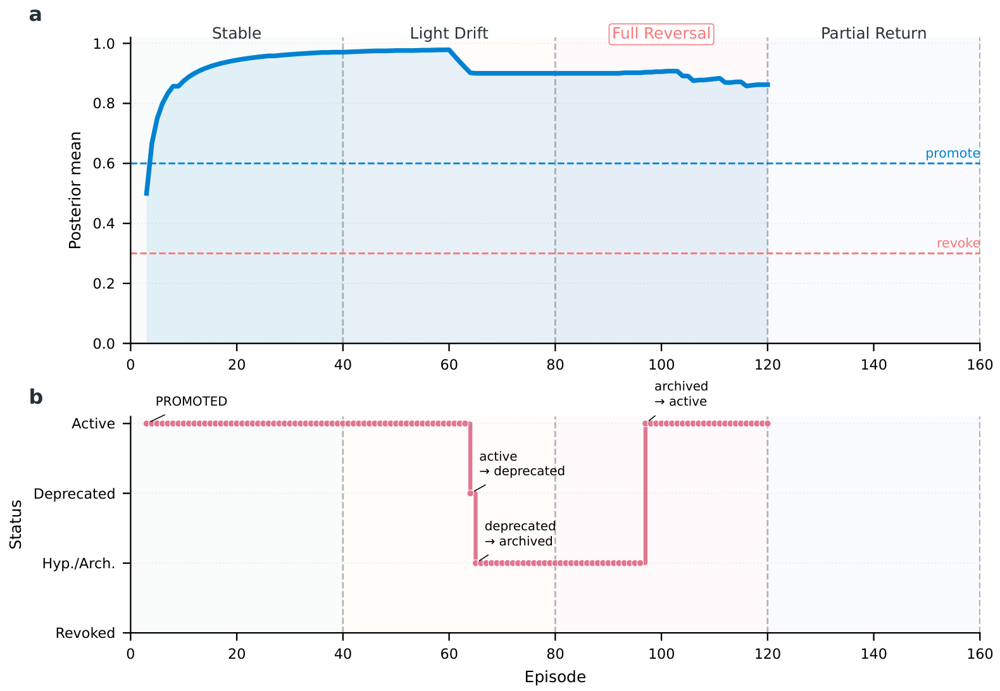
Figure 5 把连续统计与离散状态对齐。上图中 posterior 在稳定与轻漂移阶段保持高位，进入 full reversal 后因连续 counter-evidence 下滑；下图则显示 Active 项先被标为 deprecated，再进入归档，后来新的支持证据使其重新成为 Active。这里的曲线并未跌到红色后验阈值才发生全部状态动作，反映 recent-window 条件也参与触发。Partial return 时重新激活说明 revoked archive 不是垃圾桶，而是具有可追溯性的冷层。工程上可以据此记录触发阈值、反证 episode 和恢复路径，避免把一次错误更新变成不可逆遗忘。图中后验曲线与状态轨迹还给复现提供了直接断言：撤销时间、归档区间和重新激活点应与日志中的同 key 反证序列一致。
2.4 Trial-Validated Promotion 与撤销的风险含义
TEPA-Full 在候选 promotion 前加入 trial-by-execution。默认预算为三次：一项 support task 检查候选是否真能提高奖励，一项 counterfactual task 检查它会不会对相反情形造成伤害，一项 contamination check 检查无关领域是否被波及。至少 60% trials 为正且 support trial 至少成功一次，候选才激活。这一步与 revocation 分工不同：trial 阻止坏候选进入 Active，revocation 清除已经 Active 但后来失效的旧项；偏好更新实验正是用来验证两者不能互相替代。
附录用单 key supersession 给出有限但清楚的风险界。当旧值暴露概率为 $q$，下游看到它后跟随旧值的概率为 $\eta$，每次错误的附加损失为 $\Delta$ 时：
符号解释：$L_{\mathrm{append}}$ 与 $L_{\mathrm{revoke}}$ 是两类检索策略的期望损失。该式只保证在当前值仍可用、同 key 旧值已被新值取代时，去掉旧值不会增加这部分风险；它不声称 TEPA 对任意多跳或开放域记忆全局最优。若 $\Delta=1$，便得到 0-1 错误下界。
稳态片段内，后验均值还满足一致性直觉：
符号解释：$Z_i\in\{0,1\}$ 表示第 $i$ 个反馈是否支持 precedent，若其均值 $\mu<\theta_{\mathrm{rev}}$，则 $q_n(p)$ 最终几乎必然低于撤销阈值；若 $\mu>\theta_{\mathrm{rev}}$，充分多观察后的误撤销概率随 $n$ 指数衰减。这个结论依赖片段内近似平稳，不能替代开放环境中的因果归因，但说明支持/冲突计数并非任意启发式。
3. 实验结果
3.1 评测设计与主证据总览
论文用四类环境回答四个研究问题。受控 hidden-regime drift、真实 file-backed executable drift 与 preference-update stream 都使用 50 个 seeds，每个 seed 160 个任务，stable、light drift、full reversal、partial return 各 40 个任务；主指标是分阶段成功率。MemoryAgentBench SH-6k 使用三个 query-order seeds、300 个 queries，以 substring exact match 评估单跳冲突整合。前三类环境采用确定性执行器隔离记忆状态，外部 benchmark 则固定 DeepSeek-v4-Flash answer backend、prompt、query order 与评分管线。
基线不仅有 no-memory 和 append-only，还包括 temporal recency、semantic retrieval、sliding window、reactive forgetting、last-write-wins、conflict-aware recency 与带真实 phase boundary 的 oracle reset。Oracle 使用部署时不可得信息，只是诊断上界。统计采用配对设计：同一 seed 和 task index 下比较方法，报告 bootstrap 95% 置信区间、方向性配对 permutation test、Holm-Bonferroni 校正和可定义时的配对效应量。
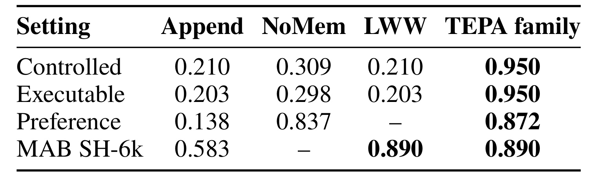
Table 2 必须按行分别解读，不能把四个 0.950/0.890 当成同一指标。Controlled 与 Executable 行报告完整反转成功率：append-only 与 LWW 都跌到约 0.20，低于 no-memory 的约 0.30，而 TEPA 为 0.950。Preference 行使用 TEPA-Full，表中 0.872 是 full-reversal success；MAB SH-6k 行则是 substring EM，TEPA-Rev 与 LWW 同为 0.890。它同时给出一个支持和一个限制：撤销对需要从结果推断状态的反转流帮助显著；当最新事实被干净直接地写入时，current-key replacement 已经足够强。表内 LWW 在 Preference 行缺失，也意味着不同设置并非所有机制都做了完全相同的汇总比较，后续必须回到各实验的详细段落判断。
3.2 受控隐藏状态漂移：记忆何时变成伤害源
受控漂移将可见上下文保持相似，只改变隐藏的正确工具或动作模式。完整反转时 append-only、LWW 与 conflict-aware recency 均为 0.210，no-memory 为 0.309，因此 append-only 的污染指数约为 0.318；TEPA 则为 0.950。总体任务上 TEPA 对 append-only 的配对差值是 0.167，95% CI 为 [0.162, 0.172]；只看 reversal，相差 0.740，95% CI 为 [0.722, 0.756]，Holm 校正后 $p<0.001$。错误主要集中在状态切换后的少数同 key trials，撤销触发后活动集合恢复干净。
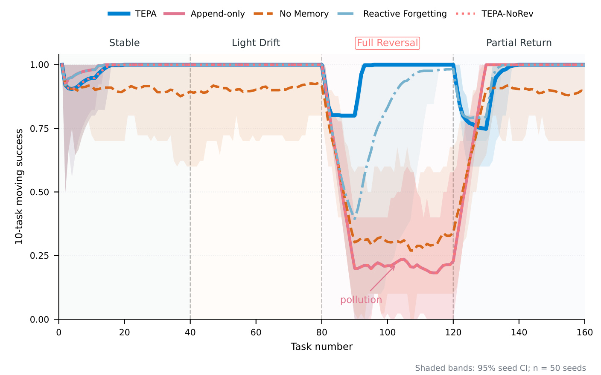
Figure 2 说明 0.950 不是整个阶段毫无错误，而是适应延迟的平均结果。前 80 个任务处于 stable/light drift，带记忆的方法很快接近 1；进入 full reversal 后，append-only 与 NoRev 迅速降至约 0.21，甚至低于橙色 no-memory 曲线，而 TEPA 只在转换开始时降到约 0.8，随后因旧 precedent 被撤销恢复到接近 1。Reactive Forgetting 恢复更慢，因为它用全局失败信号清理而非同 key 局部更新。Partial return 再次出现短暂适应成本，说明方法的代价主要在相位切换，而不是稳定运行。阴影置信带在 no-memory 与污染方法上明显更宽，也表明不同 seeds 的基础执行难度存在差异，使用配对检验比只比较独立均值更合适。
3.3 真实文件执行与偏好更新
真实执行环境不再只计算符号奖励，而是生成 CSV/JSON 文件并调用真实工具库：CSV 接受的 backend 在 reversal 中变化，JSON 作为稳定控制。完整反转时 append-only 与 LWW 为 0.203，no-memory 为 0.298，TEPA 仍为 0.950；TEPA 相对 append-only 的差值为 0.748，95% CI [0.728, 0.768]，而 no-memory 相对 append-only 的优势也显著。这说明 stale precedent 能在真正的文件 I/O 与代码执行路径上引导错误工具选择，而不是评测脚本人为制造的一次分数跳变。
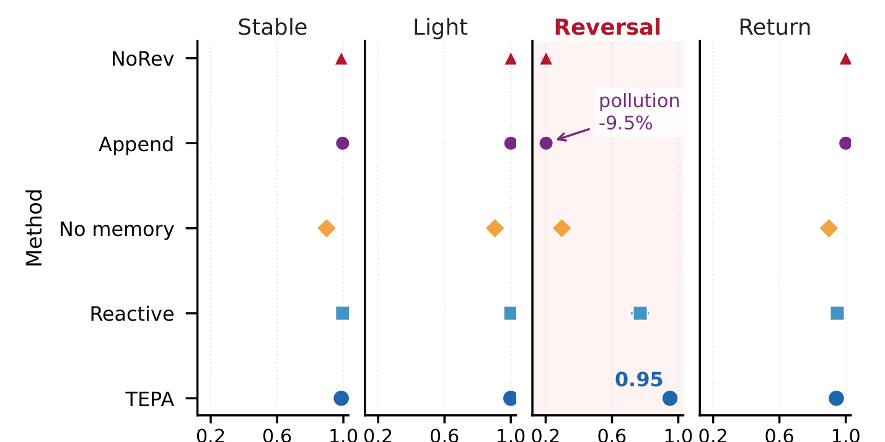
Figure 3 用列表示四阶段、行表示方法，点和横线对应 50 seeds 的成功率与 95% CI。Reversal 列里 NoRev 与 Append 落在约 0.2，no-memory 约 0.3，TEPA 标出的 0.95 与其他行明显分离；Stable、Light 和 Return 列则多数方法接近高位。这个结构强化了因果解释：方法间最大差异只在旧工具经验被反转的阶段出现，稳定 JSON 控制任务没有同步崩溃。Reactive 能恢复一部分，但 0.771 仍低于 TEPA，支持局部 keyed revocation 比全局失败后遗忘更精确。
偏好更新比工具状态更难，因为旧画像与当前问题仍高度相关，新 session 反馈也可能带噪声。完整反转中 append-only 仅 0.138，而 no-memory 为 0.837；LWW 总体 0.686，也低于 no-memory。给 LWW 加上同样的 validation 后总体升至 0.863，但仍比 TEPA-Full 低 0.048，95% CI [0.026, 0.069]；差距在完整反转阶段扩大到 0.240。TEPA-Full 总体 0.910，与 no-memory 的 0.908 在统计上无显著差异。
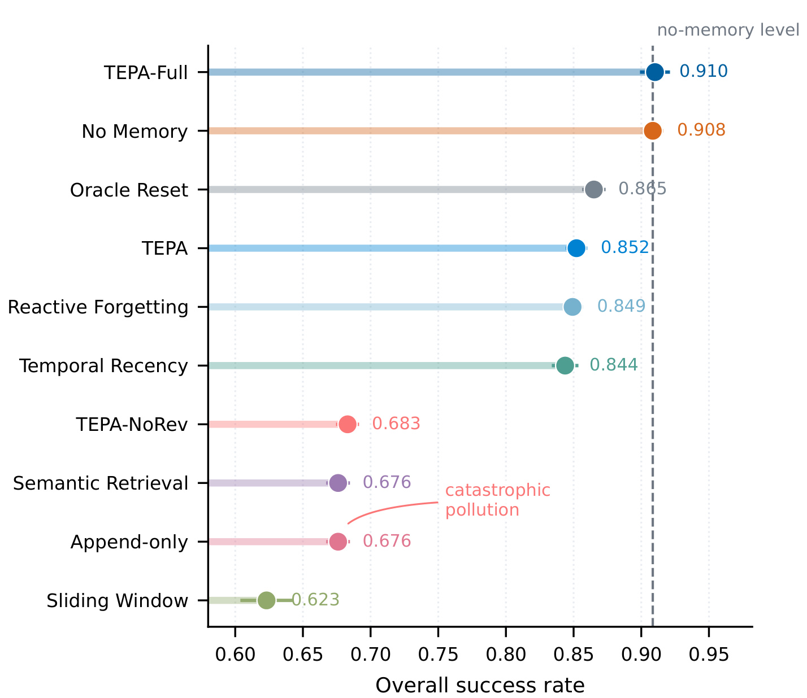
Figure 8 展示的是总体成功率而非 Table 2 的 full-reversal 行，因此数值口径不同。TEPA-Full 0.910 几乎贴着 no-memory 0.908，默认 TEPA 只有 0.852；这 0.058 的差距表明 trial validation 对候选偏好能否被 promotion 很重要。另一方面，TEPA-NoRev 与 append-only 都约 0.68，证明仅有候选验证而不撤销旧 Active 偏好仍会积累污染。Oracle reset 只有 0.865 也提醒我们，知道相位边界并不自动得到正确偏好，局部证据验证仍是必要环节。图中 semantic retrieval 与 append-only 同为 0.676，进一步说明“高度相关”并不能作为“仍然有效”的替代信号。
3.4 外部基准、消融与适用边界
MemoryAgentBench SH-6k 把最新事实直接供给记忆系统，更接近干净的事实更新。TEPA-Rev 与 LWW 都达到 0.890，TEPA-NoRev 为 0.630，append-only 为 0.583。论文没有回避这个结果：在单跳、同 key、最新值直接可见的条件下，最关键操作就是替换当前 key，archive、posterior 和 trial 的额外价值有限；TEPA 的复杂性主要服务于更新有效性必须从交互结果推断的场景。
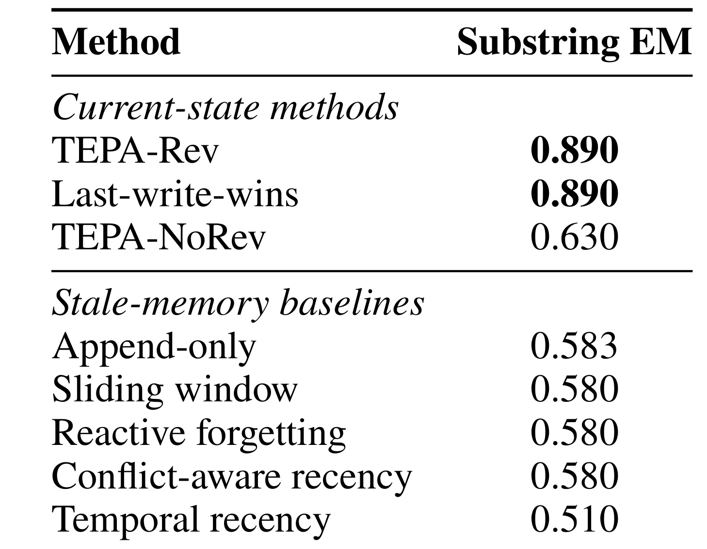
Table 3 把 current-state methods 与 stale-memory baselines 分组。第一组中 TEPA-Rev 与 LWW 并列，说明不能宣称 TEPA 在所有事实更新上超过简单 cache；但 NoRev 低 0.260，确认“同 key 新值出现后旧值退出活动集”是决定性操作。第二组中滑动窗口、reactive forgetting 与 conflict-aware recency 都在 0.580 左右，时间顺序或检索时去重没有持久状态替换那么可靠。这个外部结果更像机制校准，而不是对完整 Agent 栈的胜利宣言。由于三次 query-order seeds 共 300 个查询使用同一固定后端，这张表验证的是记忆状态转移，不足以说明换成更强生成模型后排序仍完全一致。
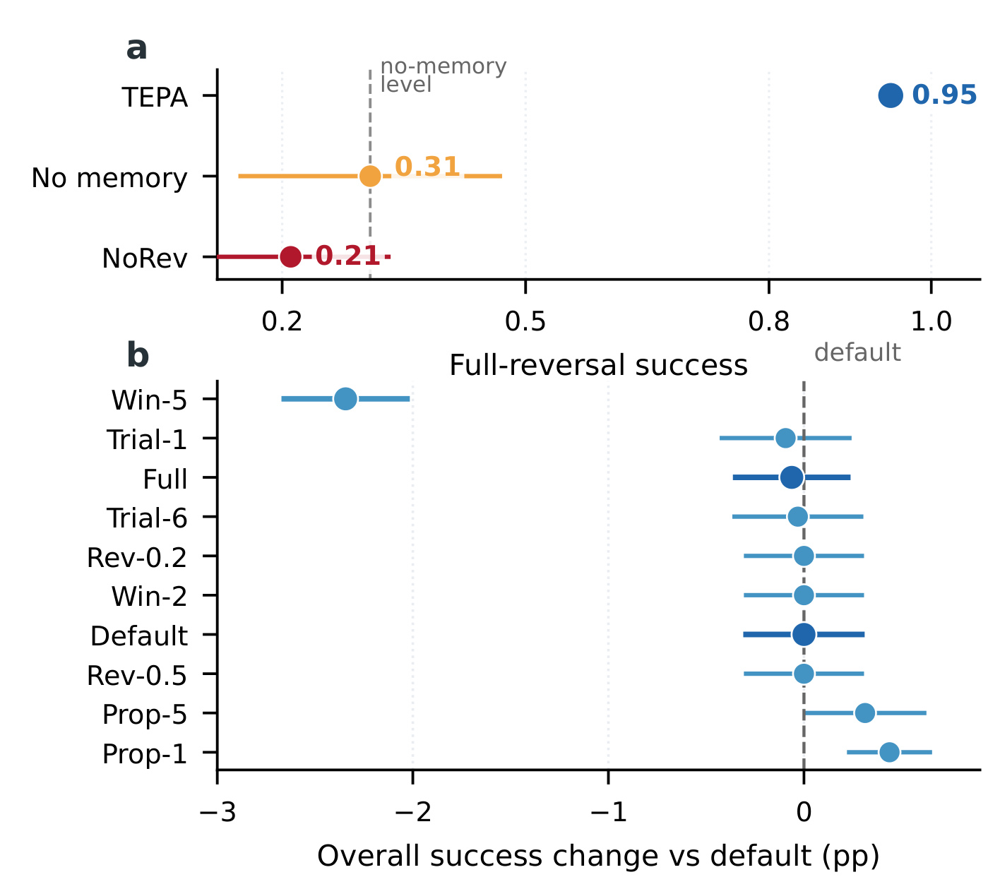
Figure 4a 直接比较 full-reversal：TEPA 0.95，no-memory 0.31，NoRev 0.21。移除 revocation 后几乎回到 append-only 的失败模式，组件必要性远大于阈值微调。Figure 4b 把变体表示为相对默认配置的总体百分点变化；$\theta_{\mathrm{rev}}$ 在 0.2 到 0.5、trial budget 在 1 到 6、proposal threshold 在 1 到 5 附近多数接近零，最大的负向异常是 recent window 增至 5，使状态切换反应变慢。结果支持默认点附近具有一定鲁棒性，但并不等价于在更噪的开放域中无需调参。
外部 benchmark 的边界结果很尖锐：TEPA 在 SH-32k 仍有 0.680 substring EM，却在 MH-6k 只有 0.040，在 SH-262k 为 0.000。单跳事实有效性被修复以后，多跳关系链如何构造、超长上下文中如何选择证据，成为新的主瓶颈。换句话说，撤销发生在 retrieval 之前，只决定活动候选集；它没有训练新的 multi-hop planner，也没有解决 lost-in-the-middle 或上下文预算分配。
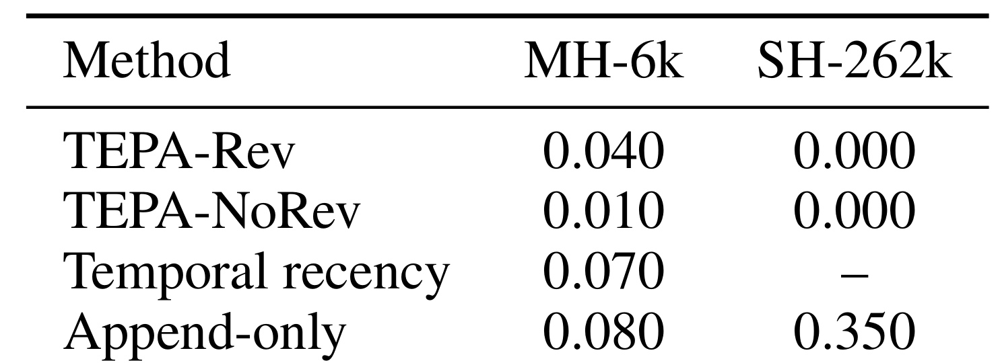
Table 5 显示在 MH-6k 上，TEPA-Rev 的 0.040 甚至低于 temporal recency 的 0.070 和 append-only 的 0.080；在 SH-262k 上 TEPA 与 NoRev 都为 0，append-only 反而有 0.350。这里不能把 append-only 解释为更好的长期方案，而应理解为当前 TEPA 的 lexical top-k 与 active-state update 没有形成所需证据链，过早过滤也可能减少偶然命中的上下文。作者将这些数字作为失败边界而非正向主张，这让“生命周期正确性”和“检索规划能力”得到清晰分层。表中破折号代表未纳入已审计运行，并不是零分，比较时不能把缺失结果当作失败或能力证据。
3.5 键噪声、统计可信度与系统成本
受控实验使用 schema-based extractor：工具任务以 task type、domain 和 input type 组成 key，偏好任务用槽位与 profile context，MAB 则从 subject-relation 模板解析。这保证了机制归因干净，却也是开放域迁移最大的假设。论文因此保持可执行任务不变，只以概率 $\rho$ 扰动记忆系统看到的结构化 key，检查错 key 会怎样破坏同 key 反证。
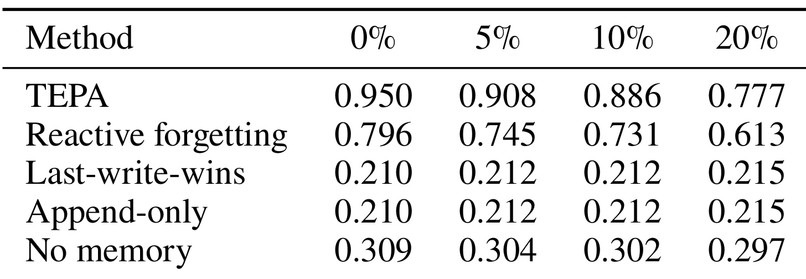
Table 6 中 TEPA 从 0% 噪声的 0.950 逐步降至 5% 的 0.908、10% 的 0.886、20% 的 0.777，退化平滑但明显；Reactive Forgetting 也从 0.796 降到 0.613。LWW 和 append-only 始终约 0.21，并非对噪声更稳，而是它们在零噪声时就没有撤销信号可受损。这个审计说明，开放域部署不能只优化 posterior 阈值，还需要给 key extractor 做实体消歧、关系规范化、置信度估计与人工回滚，否则错误 key 会把有效 precedent 当成冲突项。
统计上，受控总体 TEPA 对 append-only 的均值差 0.167，真实执行总体差 0.171，偏好总体 TEPA-Full 对 append-only 差 0.234，相关比较在 Holm 校正后均为 $p<0.001$；偏好 TEPA-Full 与 no-memory 的差 0.002，95% CI [-0.011, 0.014]，校正后 $p=1.000$。这些配对结果支持“撤销避免额外伤害”，却不证明模型在无记忆基线之上获得新的推理能力。尤其前三个 drift benchmark 依赖确定性执行器，其优势是隔离变量，代价是对自然语言噪声的外推有限。
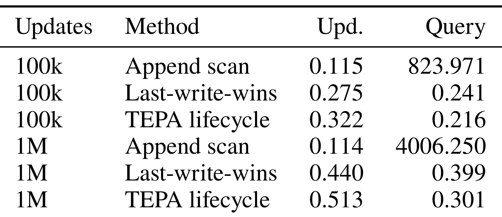
Table 9 的 Upd. 是每 1k 次更新的毫秒数，Query 是每次 key lookup 的微秒数。100k 更新时 TEPA lifecycle 更新 0.322ms、查询 0.216us；到 1M 时分别为 0.513ms 和 0.301us。LWW 的更新略便宜，查询同样是亚微秒量级。相比之下，append scan 虽然单批写入只约 0.114ms，却因线性扫描使查询从 823.971us 增至 4006.250us。该表支持活动键索引的系统可扩展性，但没有测量真实 LLM 推理、远程存储、embedding 检索和审计持久化的端到端延迟。因而它证明的是 keyed lookup 数据结构的数量级优势，不能直接换算成线上 Agent 请求节省了多少毫秒。
4. 总结
4.1 我的判断
TEPA 最有价值的贡献是把“记忆是否仍有效”从 prompt 内的软判断提升为检索前的显式状态机。它不试图用更大上下文包容矛盾，也不把遗忘等同于按时间删除，而是让同 key 新证据能够撤销旧 precedent，同时保留归档、证据计数与重新激活路径。受控、真实执行与偏好流共同表明：当旧证据仍 Active 时，相关性越高反而越危险；单跳外部基准又表明，在最新值直接可见时，简单 LWW 已足够强。因而更准确的结论是，TEPA 解决了 stale-conflict lifecycle，而不是完整的长期记忆问题。
对推荐、搜索和个性化 Agent，最可迁移的做法是把长期画像拆成有稳定 key、版本和值的证据单元，为线上可见状态与审计保留状态分别建模。偏好反转可先在 shadow request 或 counterfactual bucket 中试用，再 promotion；撤销事件应保留来源、触发阈值和受影响请求，便于回滚。检索层只消费 Active 集合，排序模型不必同时解释所有历史冲突。这种设计尤其适合偏好槽位、规则配置、实体属性和工具路由，而不适合尚无法稳定定义冲突关系的自由文本经验。
4.2 局限、复现建议与后续跟进
论文至少有四条明确边界。第一，key/value 抽取在主实验中是 schema-based，开放域实体别名、含蓄偏好和跨句冲突会更难；20% key noise 已把 TEPA 从 0.950 拉到 0.777。第二，MH-6k 与 SH-262k 结果显示它没有解决多跳链构造和超长上下文选择。第三，受控与文件执行使用确定性 executor，有利于因果归因，却低估真实 LLM 的表述噪声、错误反思和工具返回歧义。第四，错误撤销可能让仍有效证据退出在线检索，archive 虽提供回滚条件，论文却没有给出大规模人工审计成本。第五，本轮没有核验到公开代码，benchmark 构造、key extractor 与统计管线仍需等待可复现实物。
后续至少应做三组实验。其一，在真实用户偏好日志上比较 schema key、LLM-parsed key 与混合置信度 key，并把 false revocation、恢复时间和在线伤害作为独立指标，因为最终成功率会掩盖错误撤销。其二，把 TEPA 与多跳 retriever/planner 组合，区分“活动集合正确但链没找出来”和“precedent 状态本身错误”，验证 Table 5 的失败能否由检索规划层修复。其三，在排序或 Agent 服务中做 shadow trial：候选偏好先影响旁路打分，不直接改变用户结果，再依据 support、counterfactual 与 contamination 检查 promotion。其四，等待代码公开后复跑 50-seed drift、配对 permutation test 与百万更新 microbenchmark，核对 0.950 平台是否确由阈值触发延迟形成，并测量带远程存储和 embedding 检索时的真实端到端成本。